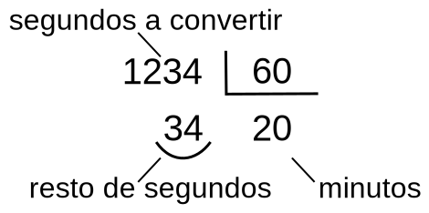
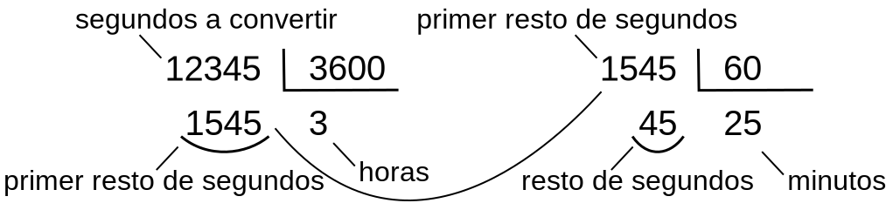
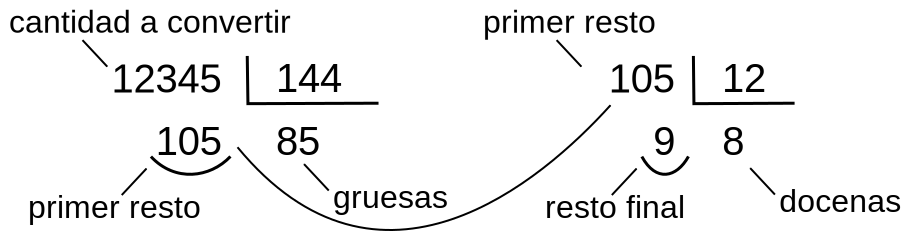

Se ofrecen a continuación unas posibles soluciones de los ejercicios de Variables, Entrada y salida y Operaciones aritméticas elementales.
print("CÁLCULO DE LA MEDIA DE DOS NÚMEROS")
numero1 = float(input("Escriba un número: "))
numero2 = float(input("Escriba otro número: "))
media = (numero1+numero2) / 2
print(f"La media aritmética de {numero1} y {numero2} es {media}")
Es posible ahorrarse la variable auxiliar media y escribir directamente el cálculo en la respuesta.
print("CÁLCULO DE LA MEDIA DE DOS NÚMEROS")
numero1 = float(input("Escriba un número: "))
numero2 = float(input("Escriba otro número: "))
print(f"La media aritmética de {numero1} y {numero2} "
f"es {(numero1 + numero2) / 2}")
print("CÁLCULO DEL ÍNDICE DE MASA CORPORAL (IMC)")
peso = float(input("¿Cuánto pesa? "))
altura = float(input("¿Cuánto mide en metros? "))
imc = peso / altura**2
print(f"Su imc es {round(imc, 1)}")
print("Un imc muy alto indica obesidad. Los valores \"normales\" de imc están")
print("entre 20 y 25, pero esos límites dependen de la edad, del sexo, de la")
print("constitución física, etc.")
El cálculo del índice de masa corporal podría expresarse de varias maneras:
imc = peso / altura**2imc = peso / (altura*altura)imc = peso / pow(altura, 2)
print("CONVERTIDOR DE PIES Y PULGADAS A CENTÍMETROS")
pies = float(input("Escriba una cantidad de pies: "))
pulgadas = float(input("Escriba una cantidad de pulgadas: "))
centimetros = (pies*12 + pulgadas) * 2.54
print(f"{pies} pies y {pulgadas} pulgadas son {centimetros} cm")
El cálculo de los centímetro podría expresarse de varias maneras
centimetros = (pies*12 + pulgadas) * 2.54centimetros = pies*12*2.54 + pulgadas*2.54
print("CONVERTIDOR DE PULGADAS A CENTÍMETROS")
pulgadas = float(input("Escriba una cantidad de pulgadas: "))
centimetros = pulgadas * 2.54
print(f"{pulgadas} pulgadas son {centimetros} cm")
print("CONVERTIDOR DE PIES A CENTÍMETROS")
pies = float(input("Escriba una cantidad de pies: "))
centimetros = pies * 12 * 2.54
print(f"{pies} pies son {centimetros} cm")
print("CONVERTIDOR DE GRADOS CELSIUS A GRADOS FAHRENHEIT")
celsius = float(input("Escriba una temperatura en grados Celsius: "))
fahrenheit = 1.8*celsius + 32
print(f"{celsius} ºC son {fahrenheit} ºF")
print("CONVERTIDOR DE GRADOS FAHRENHEIT A GRADOS CELSIUS")
fahrenheit = float(input("Escriba una temperatura en grados Fahrenheit: "))
celsius = (fahrenheit-32) / 1.8
print(f"{fahrenheit} ºF son {round(celsius, 1)} ºC")
Para convertir de segundos a minutos basta una división:

print("CONVERTIDOR DE SEGUNDOS A MINUTOS")
segundos = int(input("Escriba una cantidad de segundos: "))
minutos = segundos // 60
resto = segundos % 60
print(f"{segundos} segundos son {minutos} minutos y {resto} segundos")
Como una hora son 3600 segundos (60 * 60), el resultado se obtiene mediante dos divisiones sucesivas:

print("CONVERTIDOR DE SEGUNDOS A HORAS Y MINUTOS")
segundos = int(input("Escriba una cantidad de segundos: "))
horas = segundos // 3600
resto1 = segundos % 3600
minutos = resto1 // 60
resto = resto1 % 60
print(f"{segundos} segundos son {horas} horas, "
f"{minutos} minutos y {resto} segundos")
Las expresiones anteriores se pueden simplificar sin recurrir a variables intermedias:
print("CONVERTIDOR DE SEGUNDOS A HORAS Y MINUTOS")
segundos = int(input("Escriba una cantidad de segundos: "))
horas = segundos // 3600
minutos = segundos % 3600 // 60
resto = segundos % 60
print(f"{segundos} segundos son {horas} horas, "
f"{minutos} minutos y {resto} segundos")
Como una gruesa son 144 unidades (12 * 12), el resultado se obtiene mediante dos divisiones sucesivas:

print("CONVERTIDOR A GRUESAS Y DOCENAS")
unidades = int(input("Escriba una cantidad (entera): "))
gruesas = unidades // 144
docenas = unidades % 144 // 12
resto = unidades % 12
print(f"{unidades} unidades son {gruesas} gruesas, "
f"{docenas} docenas y {resto} unidades")